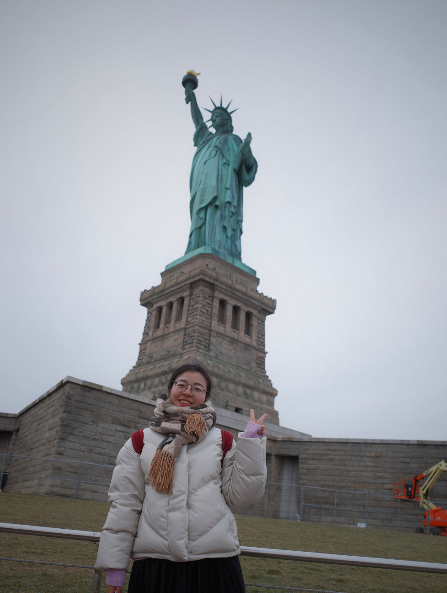

Changchang Sun (孙畅畅)Ph.D. Student
CVM Lab @ UIC |
 |
About Me
I am currently a fourth-year Ph.D. student (Jan.2025-) in the Computer Vision and Multimedia Laboratory (CVMLab) at the University of Illinois Chicago (UIC), supervised by Prof. Yan Yan. Before join UIC (Aug.2021-Dec.2024), I studied at the Illinois Institute of Technology (IIT), supervised by Prof. Yan Yan. Currently, I am a visiting student (Aug.2023-) at Michigan State University under the supervision of Prof. Sijia Liu. Before joining CVMLab, I received my Master and Bacherlor degrees from Computer Science and Technology, Shandong University in 2021 and 2018, supervised by Associate Professor Xuemeng Song, and co-supervised by Professor Liqiang Nie.
I currently work on computer vision like human-object interaction detection, cross-modal generation and retrieval, machine unlearning. During the master's degree, I worked on information retrieval and machine learning.
News [ ]
]
|
Selected Publications
Conferences
Changchang Sun, Gaowen Liu, Charles Fleming, Yan Yan
Conference on Computer Vision and Pattern Recognition (CVPR), 2025
Changchang Sun, Bin Duan, Hugo Latapie, Gaowen Liu, Yan Yan
ACM International Conference on Multimedia Retrieval (ICMR), 2024
Journals
Selected Awards & Honors
Awards
- CVPR 2022 Student Travel Award for in-person conference at New Orleans, USA, 2022.
- SIGIR 2019 Student Travel Award for in-person conference at Paris, France, 2019.
Academic Services
Conference Reviewer
- Annual Conference on Neural Information Processing Systems (NeurIPS): 2024
- IEEE/CVF Conference on Computer Vision and Pattern Recognition (CVPR): 2024
- ACM Conference on Multimedia (ACMMM): 2024
- ACM Web Conference (WebConf): 2024
Journal Reviewer
- IEEE Transactions on Knowledge and Data Engineering (TKDE).
- IEEE Transactions on Multimedia (TMM).
- IEEE Transactions on Circuits and Systems for Video Technology (TCSVT).
- Elsevier: Information Sciences (IS).
- Elsevier: Neurocomputing (IS).
Membership
- IEEE Student Member.
- ACM Student Member.
Teaching
- Teaching Assistant, IIT CS-536: Machine Learning, SS2022.
- Teaching Assistant, Shandong University: Fundamentals of Electric Circuits, SS2019 & SS2020 & SS2021.
|
Last Updated on March 31, 2025
|